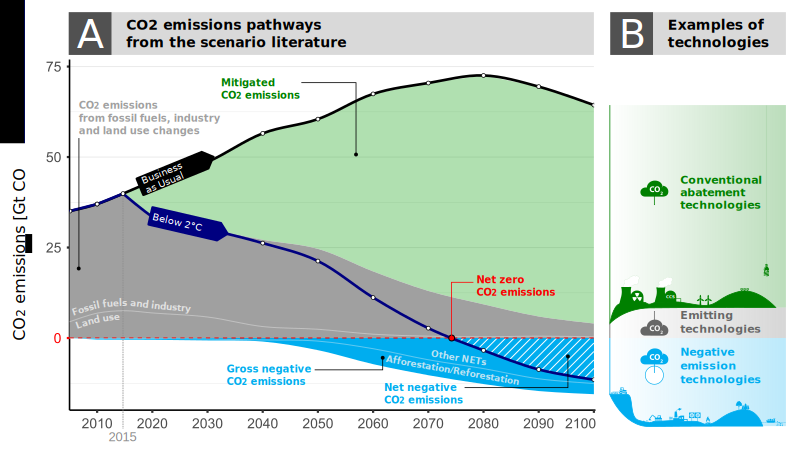

A Systematic Review of Negative Emissions Technologies
With the Paris Agreement’s ambition of limiting climate change to well below 2°C and possibly even below 1.5°C, negative emission technologies (NETs) have moved into the limelight of discussions in climate science and policy. Despite several assessments of NETs, the current knowledge on NETs is still diffuse and incomplete, but also growing fast.
This site documents a systematic review of negative emissions technologies carried out by 20 researchers at 10 different institutions. The review was published as a 3 part Topical Review in the journal Environmental Research Letters:
- Minx J C, Lamb W F, Callaghan M W, Fuss S, Hilaire J, Creutzig F, Amann T, Beringer T, de Oliveira Garcia W, Hartmann J, Khanna T, Lenzi D, Luderer G, Nemet G F, Rogelj J, Smith P, Vicente L V, Wilcox J and del Mar Zamora M 2018 Negative emissions: Part 1 - Research landscape, ethics and synthesis Environ. Res. Lett. https://doi.org/10.1088/1748-9326/aabf9b
- Fuss S, Lamb W F, Callaghan M W, Hilaire J, Creutzig F, Amann T, Beringer T, de Oliveira Garcia W, Hartmann J, Khanna T, Luderer G, Nemet G F, Rogelj J, Smith P, Vicente L V, Wilcox J, del Mar Zamora M and Minx J C 2018 Negative emissions - Part 2: Costs, potentials and side effects Environ. Res. Lett. https://doi.org/10.1088/1748-9326/aabf9f
- Nemet G F, Callaghan M W, Creutzig F, Fuss S, Hartmann J, Hilaire J, Lamb W F, Minx J C, Rogers S and Smith P 2018 Negative emissions - Part 3: Innovation and upscaling Environ. Res. Lett. https://doi.org/10.1088/1748-9326/aabff4
In part 1 we define negative emissions as intentional human efforts to remove CO2 from the atmosphere. The paper explains the different technologies used to do this; synthesises information from the other parts of the review; and summarises developments in the literature on NETs (visualised below).

Part 2 reports information collected from over 900 papers on the costs, negative emission potentials, and side effects of the different technologies. An interactive graph shows these results. These bottom-up results are put into the context of negative emissions in the scenario literature (see below) 
Part 3 systematically assesses the literature on innovation and upscaling for NETs in the light of results from integrated assessment models (see below)